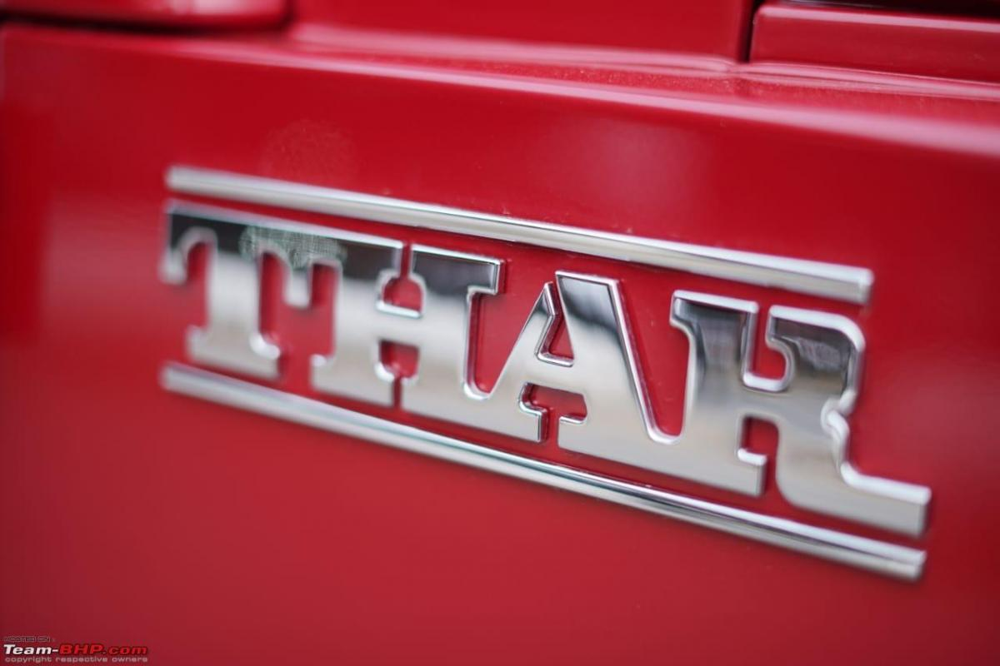

THAR 4X4
ABOUT
The Mahindra Thar CRDe 4x4 is a rugged, all-terrain vehicle that embodies the spirit of adventure and off-road driving.
With its 2.5-liter CRDe engine, it offers a refined yet powerful performance, although it lacks the smoothness and quietness of modern cars.
The vehicle features a four-wheel drive system and has shown impressive articulation and traction, making it a favorite among off-road enthusiasts.
However, it lacks basic comforts such as a hard top, and the interior quality is not up to international standards.
The ride quality and handling have been improved with the use of 15-inch tyres, but they still have room for enhancement.
The Thar CRDe 4x4 is ideal for those who value its classic look, strong metal body, and off-road capabilities over everyday comfort and refinement.

Features
Availability Status in India: Discontinued
Car Type: SUV
Fuel Type: Diesel
Latest Price in India: Mahindra Thar 4x4 CRDe (Old) price was INR 9.49 lakh before being discontinued.
ARAI Mileage (Certified): 13.28 kmpl
Top Speed: 138 kmph
Official Tagline: Thar Hates Tar!
ENGINE & TRANSMISSION
Engine cc (Displacement): 2498 cc
Number of Gears: 5-Speed Manual
Maximum Power: 105 Bhp @ 3800 rpm
Maximum Torque: 247 Nm @ 1800-2000 rpm
Engine Details: NEF TCI- CRDe
Bore x Stroke: 94 x 90 mm
Front Axle: Full Floating Hypoid Ratio 4.3:1 Capacity: 1100 kg
Rear Axle: Semi Floating Hypoid Ratio 4.3:1 Capacity: 1700 kg (Mechanical Locking Rear Differential)
Shift on Fly 4WD: Manual Shift On Fly 4WD with Low Ratio
PERFORMANCE & MILEAGE
Departure Angle (degrees): 27°
Approach Angle (degrees): 44°
DIMENSIONS & WEIGHT
Overall Length: 3920 mm
Overall Width: 1726 mm
Overall Height: 1930 mm
Wheelbase: 2430 mm
Ground Clearance: 200 mm
Kerb Weight: 1750 kg
Turning Radius: 5.75 metres
Front Track: 1445 mm
Rear Track: 1346 mm
CAPACITY
Seating Capacity: 6 Seater (2 Forward Facing and 2 Side Facing Rear Bench Seats)
Number of Doors: 2 Doors
Fuel Tank Capacity: 60 litres
BRAKES & SUSPENSION
Front Brakes: Hydraullic with Tandem Master Cylinder with LCRV 226 mm Disc
Rear Brakes: Hydraullic with Tandem Master Cylinder with LCRV 282 mm Drum
Front Suspension: IFS With Torsion Bar And Stablizer Bar
Rear Suspension Semi Elliptical Leaf Spring
WHEELS & TYRES
Front Tyre: P 235/70 R16 Tubeless
Rear Tyre: P 235/70 R16 Tubeless
Available Colours
- Red Rage
- Deep Grey
- Stealth Black
- Everest White
- Deep Forest
- Desert Fury